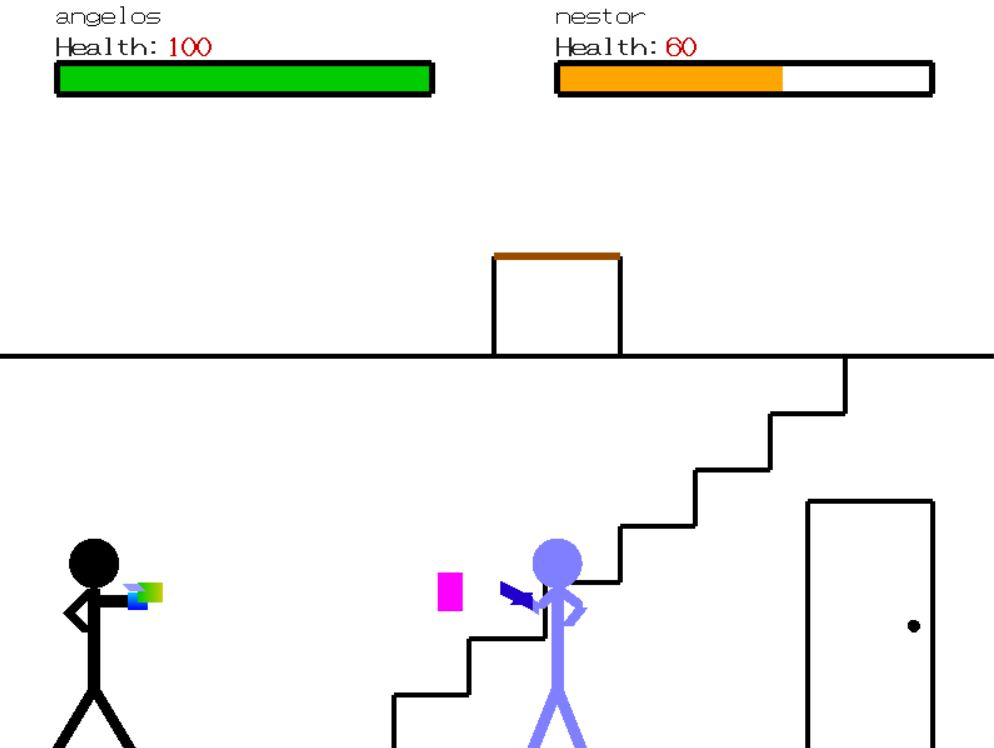

Projects
Vehicle Behavior Prediction
 |
Having joined Intelligent Control Lab at the Robotics Institute on spring 2019, I started working on vehicle behavior prediction, advised by Prof. Changliu Liu. Precisely, I labeled vehicle trajectory data taken from the Next Generation Simulation (NGSIM) dataset based on their maneuver attempted or executed during the next 3 seconds (keep current lane turn left turn right). I formulated a multiclass classification problem of predicting the intention/maneuver of a vehicle for a predetermined time horizon using semantic features, such as vehicle coordinates and velocity, and implemented a Long Short-Term Memory (LSTM) network that outputs the probability of each class at every time step. |
Robot Design
 |
Drawing inspiration from penguins, I collaborated with a team of students to design, manufacture and test an underwater penguin robot for the course Robot Design & Experimentation taught by Prof. Aaron Johnson. We came up with a ball-and-socket motion transmission mechanism for the movement of the flippers, fabricated a rib-and-spar body using 3D printers and laser-cutters and used Arduino for the controls. A video we created for our project, containing interviews and testing footage can be found here. |
Game Design
|  | Using OpenGL on C, we implemented a 2D fighting game for the course Engineering Computation, taught by Prof. Nestor Gomez. On the single player mode, the user controls a sticky-man figure and fights vs an AI agent. On the multiplayer mode, two users control their own sticky-man figure and fight until one of them is eliminated. The sticky-man figure can take a different set of states: gun mode (ranged), knife mode (melee), fight mode (melee). Code implementation can be found here. |
Occluded Object Pose Estimation
 |
While manipulating objects in activities of daily living, we come across a problem where objects are quite often severely occluded from the egocentric viewpoint making it difficult for the object of interest to be tracked. Inspired by this problem, we collected a synthetic dataset of manipulator postures and object poses in OpenAI Gym and mapped changes in hand pose to object displacements in order to track occluded objects. Our approach consists of a Multilayer Perceptron that takes as input the joint angles of the manipulator and outputs the position and rotation of the object. This project was a part of the course Mechanics of Manipulation, taught by Prof. Matthew Mason. |